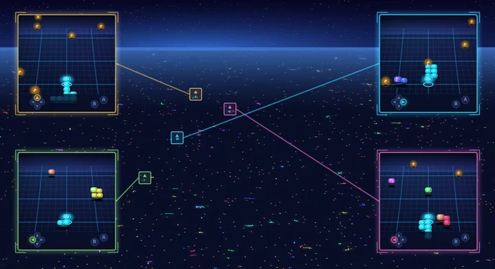

Technical Report
MASS: Multiplayer World Models with Authoritative Shared State
Technical Report, 2026
BibTeX
@TechReport{Cai_2026_MASS,
author = {Cai, Ziqi and Yang, Siqi and Wang, Yimu and Gao, Zixian and Liu, Yunheng and Weng, Shuchen and Wu, Erwin and Zhang, Kaipeng and Shi, Boxin},
title = {{MASS}: Multiplayer World Models with Authoritative Shared State},
institution = {Technical Report},
year = {2026},
eprint = {2608.06257},
url = {https://arxiv.org/abs/2608.06257},
}